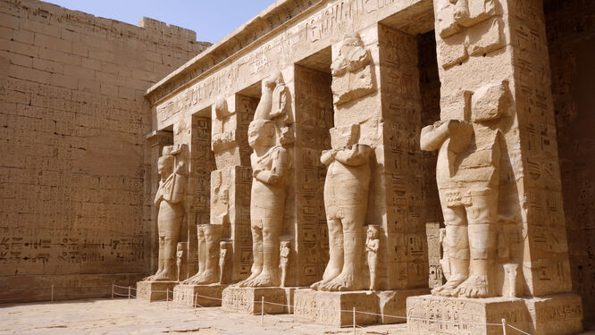

Luxor is an important travel destination because it contains some of the best-preserved ancient Egyptian temples, tombs, and monuments.
The city is located along the Nile River and is often described as an open-air museum because historical sites are found throughout the area. Visitors can explore both the modern city and the remains of ancient Thebes during the same trip (Experience Egypt, n.d.; UNESCO World Heritage Centre, n.d.).
Modern Luxor was built near the location of ancient Thebes, which served as an important capital and religious center of Egypt. The city became especially powerful during the Middle Kingdom and New Kingdom, when many of its most famous temples and tombs were constructed. Ancient Thebes and its necropolis were added to the UNESCO World Heritage List in 1979 because of their outstanding cultural and historical importance (Ministry of Tourism and Antiquities, n.d.; UNESCO World Heritage Centre, n.d.).
The best time to visit Luxor is generally during the cooler months between October and April. Winter temperatures make it more comfortable to walk through temples, explore tombs, and spend time outdoors. Travelers should be prepared for very hot conditions from May through September, especially during the middle of the day (Experience Egypt, n.d.; Lonely Planet, 2026).
Visitors can choose to stay on either the East Bank or the West Bank of the Nile River. The East Bank has many hotels, restaurants, transportation options, and access to Luxor Temple and Karnak Temple. The West Bank offers a quieter setting and places travelers closer to the Valley of the Kings and other archaeological sites (Experience Egypt, n.d.).
There are many activities to enjoy in Luxor besides visiting ancient ruins. Travelers can take a boat ride on the Nile, watch the sunrise from a hot-air balloon, explore the local souq, or ride in a traditional horse-drawn carriage. A Nile cruise is another popular activity because it allows visitors to travel between Luxor and other important destinations in southern Egypt (Experience Egypt, n.d.).
Some of the most famous landmarks in Luxor include Karnak Temple, Luxor Temple, the Valley of the Kings, and the Valley of the Queens. Visitors can also see the Temple of Hatshepsut, the Colossi of Memnon, Medinet Habu, and the Luxor Museum. Together, these sites show the religious, artistic, and political importance of ancient Thebes (Ministry of Tourism and Antiquities, n.d.; UNESCO World Heritage Centre, n.d.).
Luxor offers opportunities to try both traditional Egyptian meals and international food. Popular Egyptian dishes include foul, taameya, koshary, molokhiya, kofta, kabab, and hamam mahshi. Visitors can find food in hotel restaurants, local cafés, restaurants near the Nile, and small eateries throughout the city (Experience Egypt, n.d.).
Travelers can move around Luxor using taxis, local ferries, private drivers, bicycles, or organized tours. The Nile separates the East Bank from the West Bank, so crossing the river is an important part of visiting many attractions. Visitors may also travel to Luxor by airplane, train, bus, or Nile cruise from other parts of Egypt (Experience Egypt, n.d.).

Luxor is an important travel destination because it contains some of the best-preserved ancient Egyptian temples, tombs, and monuments. The city is located along the Nile River and is often described as an open-air museum because historical sites are found throughout the area. Visitors can explore both the modern city and the remains of ancient Thebes during the same trip (Experience Egypt, n.d.; UNESCO World Heritage Centre, n.d.).
Modern Luxor was built near the location of ancient Thebes, which served as an important capital and religious center of Egypt. The city became especially powerful during the Middle Kingdom and New Kingdom, when many of its most famous temples and tombs were constructed. Ancient Thebes and its necropolis were added to the UNESCO World Heritage List in 1979 because of their outstanding cultural and historical importance (Ministry of Tourism and Antiquities, n.d.; UNESCO World Heritage Centre, n.d.).
The best time to visit Luxor is generally during the cooler months between October and April. Winter temperatures make it more comfortable to walk through temples, explore tombs, and spend time outdoors. Travelers should be prepared for very hot conditions from May through September, especially during the middle of the day (Experience Egypt, n.d.; Lonely Planet, 2026).
There are many activities to enjoy in Luxor besides visiting ancient ruins. Travelers can take a boat ride on the Nile, watch the sunrise from a hot-air balloon, explore the local souq, or ride in a traditional horse-drawn carriage. A Nile cruise is another popular activity because it allows visitors to travel between Luxor and other important destinations in southern Egypt (Experience Egypt, n.d.).
Some of the most famous landmarks in Luxor which represent the religious, artistic, and political importance of ancient Thebes include:
(Ministry of Tourism and Antiquities, n.d.; UNESCO World Heritage Centre, n.d.).